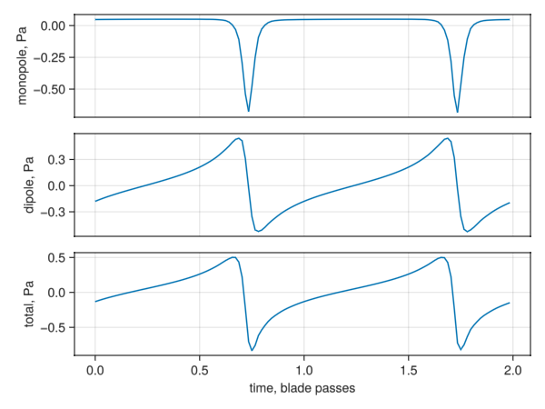
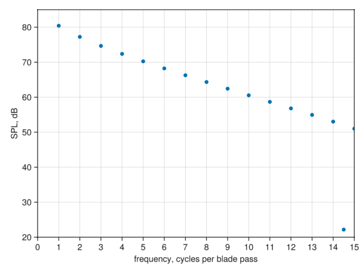

Compact Formulation 1A Guided Example
There are four steps to predicting propeller/rotor noise with AcousticAnalogies.jl.
- Define the blade's motion and loading as a function of source time
- Perform the advanced time calculation
- Propagate the acoustics caused by each blade section to the acoustic observer(s) using the F1A formulation
- Combine all the acoustic pressures resulting from step 3 into one acoustic pressure time history
1. Define the Blade
The Blade-Fixed Reference Frame
We need to know what the blade is doing aerodynamically before we can predict how loud it is. Specifically, we need to know at each radial station along each blade the
- position
- velocity
- acceleration
- jerk (time derivative of acceleration)
- cross-sectional area
- loading per unit span
all as a function of time. We'll do this first in a reference frame moving with the blades, i.e., translating and rotating with the blade geometry, that we'll call the blade-fixed reference frame.
First step is to load up AcousticAnalogies.jl:
using AcousticAnalogiesSo, for this example we'll imagine that we have a blade with radial stations that look like this:
num_blades = 2 # number of blades
Rhub = 0.10 # meters
Rtip = 1.1684 # meters
radii = [
0.92904E-01, 0.11751, 0.15631, 0.20097,
0.24792 , 0.29563, 0.34336, 0.39068,
0.43727 , 0.48291, 0.52741, 0.57060,
0.61234 , 0.65249, 0.69092, 0.72752,
0.76218 , 0.79479, 0.82527, 0.85352,
0.87947 , 0.90303, 0.92415, 0.94275,
0.95880 , 0.97224, 0.98304, 0.99117,
0.99660 , 0.99932].*Rtipradii is a Vector of the distance of each blade element's center from the propeller hub, in meters.
Each of the num_blades blades have the same radial coordinates in the blade-fixed frame, but different angular coordinates: blade number 2 will be offset 180° from blade number 1.
θs = 2*pi/num_blades.*(0:(num_blades-1))So now we know where each blade element is in the blade-fixed frame: in polar coordinates, element at radial index j and blade k is at radii[j], θs[k].
We'll also need the length of each blade element. There is a convenience function in AcousticAnalogies.jl called get_dradii that calculates each blade element's length from the element centers and the hub and tip location:
dradii = get_dradii(radii, Rhub, Rtip)30-element Vector{Float64}:
0.022923858800000002
0.03704178520000001
0.048757332000000014
0.05351856200000002
0.05530037199999999
0.055756048
0.05552821000000002
0.054862222000000016
0.05388076599999991
0.05265978800000015
⋮
0.02610205600000004
0.023204424
0.02024252999999998
0.017228057999999935
0.014161008000000086
0.011058905999999924
0.007921751999999893
0.004761230000000172
0.002383535999999964The compact F1A calculation also requires the cross-sectional area of each element. In many types of propeller codes, the cross-sectional shape at each radial station is defined as having a certain standard shape (e.g., circular near the hub, a given airfoil shape elsewhere). If we know the cross-sectional area for each relevant airfoil shape with a chord length of one, we can find the cross-sectional area for any chord length by multiplying by the squared chord length. In this example we'll assume the blade uses the same airfoil shape at each radial station, and that this airfoil has a cross-sectional area per unit chord squared of 0.064. After defining the chord length for each radial station, we find the cross-sectional area in units of meters squared:
cs_area_over_chord_squared = 0.064
chord = [
0.35044 , 0.28260 , 0.22105 , 0.17787 , 0.14760,
0.12567 , 0.10927 , 0.96661E-01 , 0.86742E-01 ,
0.78783E-01 , 0.72287E-01 , 0.66906E-01 , 0.62387E-01 ,
0.58541E-01 , 0.55217E-01 , 0.52290E-01 , 0.49645E-01 ,
0.47176E-01 , 0.44772E-01 , 0.42326E-01 , 0.39732E-01 ,
0.36898E-01 , 0.33752E-01 , 0.30255E-01 , 0.26401E-01 ,
0.22217E-01 , 0.17765E-01 , 0.13147E-01 , 0.85683E-02 ,
0.47397E-02].*Rtip
cs_area = cs_area_over_chord_squared.*chord.^2Next, we need the loading on the blade. AcousticAnalogies.jl needs us to specify the loading at each radial station as a 3D vector in units of loading per unit span. But for now, let's imagine that we've run some type of propeller aerodynamic code (I used CCBlade.jl, FYI) and have the normal and circumferential loading as a function of radial position along the blade. The loading is in units of force per unit span (here, Newtons/meter).
fn = [32.87810395677037, 99.05130471878633, 190.1751697055377,
275.9492967565419, 358.14423433748146, 439.64679797145624,
520.1002808148281, 599.1445046901513, 676.2358818769462,
751.3409657831587, 824.2087672338118, 894.4465814696498,
961.9015451678036, 1026.0112737521583, 1086.2610633094212,
1141.4900032393818, 1190.3376703335655, 1230.8999662260915,
1260.375390697363, 1275.354422403355, 1271.8827617273287,
1245.9059108698596, 1193.9967137923225, 1113.9397490286995,
1005.273267675585, 869.4101036003673, 709.8100230053759,
532.1946243370355, 346.53986082379265, 180.66763939805125]
fc = [26.09881302938423, 55.5216259955307, 75.84767780212506, 84.84509232798283,
89.73045068624886, 93.02999477395113, 95.4384273852926, 97.31647535460424,
98.81063179767507, 100.07617771995163, 101.17251941705561, 102.11543878532882,
102.94453631586998, 103.63835661864168, 104.18877957193807, 104.51732850056433,
104.54735678589765, 104.1688287897138, 103.20319203286938, 101.46246817378582,
99.11692436681635, 96.49009546562475, 93.45834266417528, 89.49783586366624,
83.87176811707455, 75.83190739325453, 64.88004605331857, 50.98243352318318,
34.85525518071079, 19.358679206883078]We also need to decide on some atmospheric properties, specifically the ambient air density and speed of sound.
rho = 1.226 # kg/m^3
c0 = 340.0 # m/sAnd we need to decide on some operating point parameters. Let's assume that the blade is moving forward at 5.0 m/s and rotating at 2200 rev/min.
v = 0.0 # m/s
omega = 2200 * 2*pi/60 # rad/sWe also need to decide over what time period we're going to calculate the blades' acoustics. Let's do one rotation of the blade:
period = 2*pi/omega
num_src_times = 64
dt = 2*period/(num_src_times-1)
src_times = (0:num_src_times-1).*dtSo at this point we have all the information needed to define the source elements in a frame of reference that's moving with the blade, i.e., rotating at a rate of omega and moving forward at a speed of v defined above. Let's do that. We want one source element for each radial station along the blade at each src_time and each of the num_blades blades. Sounds kind of complicated, but luckily Julia's broadcasting makes this easy. What we'd like is an array ses of CompactF1ASourceElement types that has size (num_src_times, num_radial, num_blades), where ses[i, j, k] holds the CompactF1ASourceElement at src_time[i], radii[j], and blade number k. So let's reshape the input arrays to make that happen.
θs = reshape(θs, 1, 1, :)
radii = reshape(radii, 1, :, 1)
dradii = reshape(dradii, 1, :, 1)
cs_area = reshape(cs_area, 1, :, 1)
fn = reshape(fn, 1, :, 1)
fc = reshape(fc, 1, :, 1)
src_times = reshape(src_times, :, 1, 1) # This isn't really necessary.Now, the last thing we need to think about is the coordinate system we're defining these quantities in. Again, right now we are in the blade-fixed frame, which means the coordinate system is rotating with the blades at a rate of omega and translating with a velocity v in the positive x direction. The CompactF1ASourceElement constructor we'll use allows us to specify each source element's location in terms of r and θ, where r is the distance from the origin and θ is the polar angle from the positive y axis, rotating toward the positive z axis. So the radii and θs arrays are set up correctly.
Now, one of the tricky aspects of using an acoustic analogy is getting the direction of the loading on the integration surface (or line in the case of a compact formulation) right. An acoustic analogy requires the loading on the fluid, not on the solid body. One might expect that we just need to switch the sign on the fn and fc arrays above. That's true for the fn array, which represents the loading in the axial direction: if we imagine our propeller is moving in the positive x direction, the propeller would be pushing on the fluid in the negative x direction in normal operation. But what about the circumferential loading? In the blade-fixed frame, we assume the propeller is rotating about the x axis in a positive (i.e., right-handed) sense. So, if we imagine the situation for θ=0, the blade will be initially along the positive y axis, rotating toward the positive z axis. What direction will the circumferential loading on the fluid be? It will be positive, pointing in the same direction as the positive z axis. So we don't need to switch the sign on the fc array.
So let's create all the source elements:
ses = CompactF1ASourceElement.(rho, c0, radii, θs, dradii, cs_area, -fn, 0.0, fc, src_times)
size(ses)(64, 30, 2)The size of the source element array ended up like we wanted: (num_src_times, num_radial, num_blades).
The Global Reference Frame
At this point we have an array of CompactF1ASourceElement that describes the what each blade element "source" is doing from the perspective of the blade-fixed reference frame. But in order to perform the F1A calculation, we need to move the sources from the blade-fixed frame to the global reference frame, i.e., the one for which the fluid medium (air) appears to be stationary. This involves just setting the position and loading components of each CompactF1ASourceElement to the correct values (y0dot through y3dot and f0dot and f1dot). This could be done manually, but it's easier to use the KinematicCoordinateTransformations.jl package.
The first transformation we need to perform is a steady rotation around the x axis. So we create a SteadyRotXTransformation:
using KinematicCoordinateTransformations
t0 = 0.0 # Time at which the angle between the source and target coordinate systems is equal to offest.
offset = 0.0 # Angular offset between the source and target cooridante systems at t0.
rot_trans = SteadyRotXTransformation(t0, omega, offset)Next, we need to orient the rotation axis of the blades as it is the global frame. For example, let's say that it's pointed in the global positive z-axis direction, and the first blade is pointed in the positive y-axis direction. Then we can perform this transformation using the ConstantLinearMap transformation:
using LinearAlgebra: ×
using StaticArrays
rot_axis = @SVector [0.0, 0.0, 1.0]
blade_axis = @SVector [0.0, 1.0, 0.0]
global_trans = ConstantLinearMap(hcat(rot_axis, blade_axis, rot_axis×blade_axis))Finally, we need the blade to move with the appropriate forward velocity, and start from the desired location in the global reference frame:
y0_hub = @SVector [0.0, 0.0, 0.0] # Position of the hub at time t0
v0_hub = SVector{3}(v.*rot_axis) # Constant velocity of the hub in the global reference frame
const_vel_trans = ConstantVelocityTransformation(t0, y0_hub, v0_hub)Now we could apply each of these transformations to the SourceElement array. But it's more efficient to combine these three transformations into one, and then use that on the SourceElements using compose.
trans = compose.(src_times, Ref(const_vel_trans), compose.(src_times, Ref(global_trans), Ref(rot_trans)))Now trans will perform the three transformations from right to left (rot_trans, global_trans, const_vel_trans). Now we use it on ses:
ses = ses .|> transSo now the ses has been transformed from the blade-fixed reference frame to the global reference frame. We could have created the source elements and transformed them all in one line, too, which is pretty slick:
ses = AcousticAnalogies.CompactF1ASourceElement.(rho, c0, radii, θs, dradii, cs_area, -fn, 0.0, fc, src_times) .|> trans2. Perform the Advanced Time Calculation
The ses object now describes how each blade element source is moving through the global reference frame over the time src_time. As it does this, it will emit acoustics that can be sensed by an acoustic observer (a human, or a microphone). The exact "amount" of acoustics the observer will experience depends on the relative location and motion between each source and the observer. So we'll need to define our acoustic observer before we can calculate the noise heard by it. For this example, we'll assume that our acoustic observer is stationary in the global frame.
x0 = @SVector [100*12*0.0254, 0.0, 0.0] # 100 ft in meters
obs = StationaryAcousticObserver(x0)(Really, the observer should be moving with the same forward velocity as the blades themeselves, and so the observer should be constructed using a constant-velocity acoustic observer like this
obs_const_vel = ConstVelocityAcousticObserver(t0, x0, v0_hub)AcousticAnalogies.ConstVelocityAcousticObserver{Float64, StaticArraysCore.SVector{3, Float64}, StaticArraysCore.SVector{3, Float64}}(0.0, [30.48, 0.0, 0.0], [0.0, 0.0, 0.0])But we'll ignore that complication since the v0_hub velocity is so small for this example.)
Now, in order to perform the F1A calculation, we need to know when each acoustic disturbance emitted by the source arrives at the observer. This is referred to an advanced time calculation, and is done this way:
obs_time = adv_time.(ses, Ref(obs))That returns an array the same size of ses of the time each acoustic disturbance reaches the observer obs:
@show size(obs_time)size(obs_time) = (64, 30, 2)3. Perform the F1A Calculation
We're finally ready to do the compact F1A calculation!
apth = noise.(ses, Ref(obs), obs_time)When called this way (notice the . after noise), the noise routine returns an array of F1AOutput structs, the same size as ses and obs_time. Each F1AOutput struct has three components: the observer time t, the thickness/monopole part of the acoustic pressure p_m, and the loading/dipole part of the acoustic pressure p_d.
4. Combine the Acoustic Pressures
We now have a noise prediction for each of the individual source elements in ses at the acoustic observer obs. What we ultimately want is the total noise prediction at obs—we want to add all the acoustic pressures in apth together. But we can't add them directly, yet, since the observer times are not all the same. What we need to do is first interpolate the apth of each source onto a common observer time grid, and then add them up. We'll do this using the AcousticAnalogies.combine function.
bpp = period/num_blades # blade passing period
obs_time_range = 2*bpp
num_obs_times = 128
apth_total = combine(apth, obs_time_range, num_obs_times, 1)combine returns a single F1AAcousticPressure struct made up of Vectors—it is an "struct of arrays" and not an "array of structs" like apth:
@show typeof(apth) typeof(apth_total)typeof(apth) = Array{AcousticAnalogies.F1AOutput{Float64, Float64, Float64}, 3}
typeof(apth_total) = AcousticAnalogies.F1APressureTimeHistory{true, Vector{Float64}, Vector{Float64}, Float64, Float64}We can now have a look at the total acoustic pressure time history at the observer:
using AcousticMetrics
using GLMakie
fig = Figure()
ax1 = fig[1, 1] = Axis(fig, xlabel="time, blade passes", ylabel="monopole, Pa")
ax2 = fig[2, 1] = Axis(fig, xlabel="time, blade passes", ylabel="dipole, Pa")
ax3 = fig[3, 1] = Axis(fig, xlabel="time, blade passes", ylabel="total, Pa")
t_nondim = (AcousticMetrics.time(apth_total) .- AcousticMetrics.starttime(apth_total))./bpp
l1 = lines!(ax1, t_nondim, apth_total.p_m)
l2 = lines!(ax2, t_nondim, apth_total.p_d)
l3 = lines!(ax3, t_nondim, apth_total.p_m.+apth_total.p_d)
hidexdecorations!(ax1, grid=false)
hidexdecorations!(ax2, grid=false)
save("first_example-apth_total.png", fig)
We can now post-process the total acoustic pressure time history in apth_total in any way we'd like.
AcousticMetrics.jl Support
The combine function returns a F1AAcousticPressure struct, which subtypes the AbstractAcousticPressure type from the AcousticMetrics.jl package. Because of this, any of the acoustic metric functions defined in AcousticMetrics.jl relevant to AbstractAcousticPressure objects can be used with the F1AAcousticPressure returned by combine:
using AcousticMetrics
# Calculate the overall sound pressure level from the acoustic pressure time history.
oaspl_from_apth = AcousticMetrics.OASPL(apth_total)
# Calculate the narrowband spectrum of mean-squared pressure.
nbs = AcousticMetrics.MSPSpectrumAmplitude(apth_total)
# Calculate the OASPL from the NBS.
oaspl_from_nbs = AcousticMetrics.OASPL(nbs)
(oaspl_from_apth, oaspl_from_nbs)(83.77798474356251, 83.77798474356251)The two approaches to calculate the OASPL give essentially the same result.
We could also find the spectrum of, say, mean-squared pressure and use that to find the sound pressure level (SPL):
# Get the spectrum of the mean-squared pressure, and then the frequency associated with it:
nbs = AcousticMetrics.MSPSpectrumAmplitude(apth_total)
freq = AcousticMetrics.frequency(nbs)
# Find the blade passing frequency, for plotting in the frequency in units of cycles per blade passes.
bpf = omega / (2*pi) * num_blades
# Find the sound pressure level from the spectrum of mean-square pressure.
pref = 20e-6 # usual reference pressure in Pa
spl = @. 10 * log10(nbs/pref^2)
# Plot
fig = Figure()
ax1 = fig[1, 1] = Axis(fig, xlabel="frequency, cycles per blade pass", ylabel="SPL, dB")
scatter!(ax1, freq./bpf, spl)
ax1.xticks = 0:15
xlims!(ax1, 0, 15)
ylims!(ax1, 20, 85)
save("first_example-spl.png", fig)